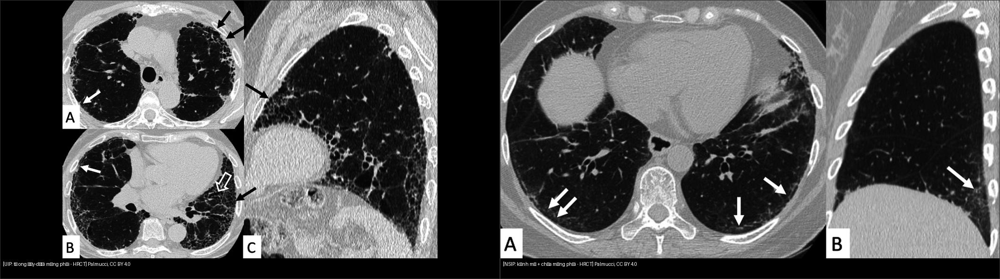
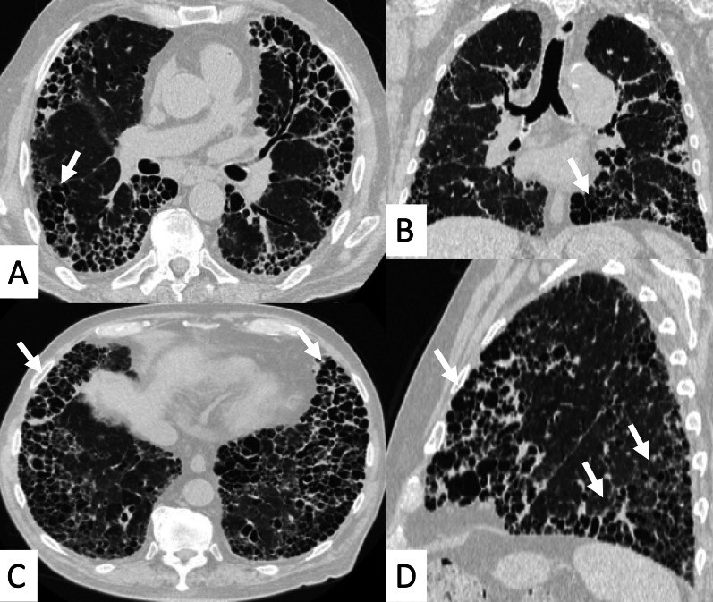
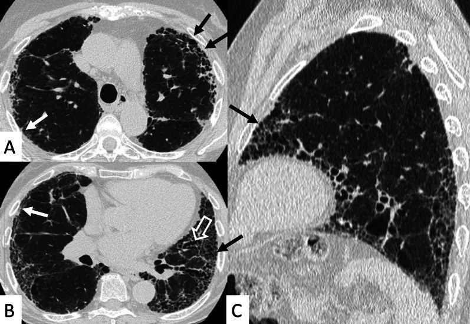
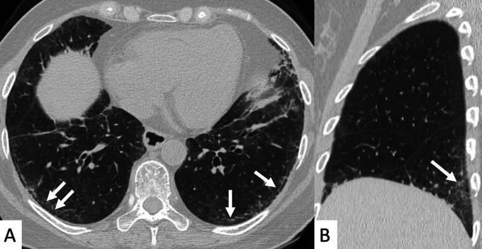

035 — Xơ mô kẽ UIP vs NSIP & tổ ong / Fibrosing ILD: UIP vs NSIP & Honeycombing
Tags: pattern:mo-ke pattern:kinh-mo vung:phoi protocol:HRCT
Mức chắc chắn (certainty): tổng hợp y văn (literature synthesis) — nhóm tự biên từ y văn mở, chưa gắn ca nguyên văn đơn lẻ.
1. Tổng quan — xơ hóa mô kẽ theo 2 kiểu + HRCT đọc thế nào
- Tiểu thùy thứ cấp (SPL) lại xuất hiện — khung đọc ILD: quanh bạch mạch (perilymphatic: vách + dưới màng phổi + quanh phế quản — sarcoid), trung tâm tiểu thùy (centrilobular: nốt mờ + tree-in-bud, chừa vách — HP/viêm tiểu PQ), ngẫu nhiên (random: nốt đều khắp + rãnh — lao kê/di căn). Xơ hóa quanh bạch mạch ngoại vi → dày vách + tổ ong dưới màng phổi (UIP); viêm nang lan tỏa → kính mờ đều (NSIP).
- Tổ ong (honeycombing): nang khí xếp tầng dưới màng phổi, chung vách dày 1–3 mm, đường kính 3–10 mm — sẹo xơ cuối đường, không hồi phục. Có tổ ong điển hình + phân bố đáy-dưới màng phổi = UIP, khỏi sinh thiết trong bối cảnh IPF.
- Giãn phế quản do kéo (traction bronchiectasis): phế quản bị xơ co kéo giãn không hồi phục — dấu xơ hóa (khác giãn phế quản viêm có thể hồi phục một phần).
- HRCT chuẩn xơ: lát mỏng 1–1,5 mm, cửa sổ phổi, 3 bình diện (axial + coronal + sagittal) + thở ra tìm bẫy khí (air-trapping) loại trừ viêm tiểu phế quản.
2. Gamut xơ hóa theo phân bố
- Đáy + dưới màng phổi + tổ ong: UIP/IPF (nam lớn tuổi, hút thuốc, ran Velcro đáy, tiến triển).
- Đáy + đối xứng + chừa màng phổi: NSIP (bệnh mô liên kết: xơ cứng bì, viêm đa cơ; đáp ứng steroid tốt hơn UIP).
- Trên + trung tâm: sarcoid (bạch mạch, hạch), HP mạn (bẫy khí, chừa đáy).
- Kính mờ cấp + mới: phù, xuất huyết, viêm phổi (nối bài 031/033) — không phải xơ mạn.

Trái: UIP — tổ ong + lưới đáy-dưới màng phổi. Phải: NSIP — kính mờ đáy + chừa sát màng phổi. Nguồn: Palmucci et al., CC BY 4.0. Ảnh ghép letterbox.3. Bảng so sánh sống còn UIP vs NSIP
| Thực thể (entity) | Hình ảnh điển hình (HRCT) | Chốt vào (rule-in) | Chốt loại (rule-out) | Gợi ý xác nhận |
|---|---|---|---|---|
| UIP / IPF | Tổ ong bắt buộc + lưới + giãn PQ do kéo, đáy + dưới màng phổi, ít kính mờ | Tổ ong đáy-dưới màng phổi + tuổi/hút thuốc + ran Velcro | Kính mờ lan rộng át lưới + chừa màng phổi → NSIP | Hội chẩn đa chuyên khoa (MDD); sinh thiết khi không điển hình |
| NSIP (xơ) | Kính mờ đối xứng + lưới, chừa sát dưới màng phổi 1–2 mm, hiếm tổ ong | Subpleural sparing + bệnh mô liên kết + đáp ứng steroid | Tổ ong lan rộng đáy → UIP | Kháng thể, PFTs, theo dõi đáp ứng |
| HP mạn (phân biệt) | Bẫy khí + nốt trung tâm tiểu thùy + chừa đáy, xơ giữa-trên; dấu 3 tỷ trọng (three-density/headcheese: kính mờ + bẫy khí + bình thường cạnh nhau) | Bẫy khí thì thở ra + 3 tỷ trọng + tiền sử kháng nguyên chim/nấm | Tổ ong đáy thuần → UIP | Hỏi phơi nhiễm, BAL lympho |
| Tổ chức hóa (OP) | Đông đặc ngoại vi + vành ngược (atoll), di chuyển | Atoll + đáp ứng steroid nhanh | Tổ ong cố định → xơ mạn | (nối bài 031) |

Tổ ong lan rộng — giai đoạn cuối xơ hóa, không còn chỉ định sinh thiết chẩn đoán. Nguồn: Palmucci et al., CC BY 4.0.4. Protocol HRCT xơ
- Lát mỏng 1–1,5 mm, không cản quang thường quy; coronal/sagittal bắt buộc (đánh giá phân bố đáy-đỉnh).
- Thì thở ra: bẫy khí (HP, sarcoid) vs xẹp đáy (atelectasis).
- Theo dõi: UIP tiến triển → giãn PQ do kéo tăng + tổ ong lan; NSIP đáp ứng → kính mờ giảm.
5. Cạm bẫy
- Xẹp đáy phổi do thở kém giả kính mờ đáy — hít sâu + lát prone xác nhận (xẹp mất khi sấp, xơ không mất).
- Giãn PQ do kéo vs giãn PQ viêm: do kéo đi kèm tổ ong/lưới xơ cùng vùng; viêm có dày thành + nút nhầy.
- Tổ ong vs kén khí/khí phế thũng cạnh vách: tổ ong xếp tầng chung vách dày dưới màng phổi; cạnh vách (paraseptal) chỉ 1 lớp nang sát màng phổi không vách xơ dày; kén LAM/LCH rải rác + thành mỏng (nối bài 050).
- Giãn PQ do kéo cắt ngang axial giả tổ ong — dựng coronal/sagittal kiểm tra liên tục cây phế quản (tổ ong là nang kín, giãn PQ là ống thông!).
- UIP + ung thư: xơ là nền sinh ung thư — nốt mới trong vùng xơ phải theo dõi như nốt thường (nối bài 020).
6. Tự lượng giá — Blind Quiz
Ca 1 — Nam lớn tuổi, khó thở tăng dần, ran Velcro đáy. Mô tả HRCT trước.

- Hỏi: phân bố đâu? Có tổ ong không? Kính mờ nhiều hay ít? Chẩn đoán + bước tiếp?
Bấm để hiện đáp án
- Tổ ong + lưới + giãn PQ do kéo, đáy + dưới màng phổi, ít kính mờ → UIP điển hình (IPF) — đủ tiêu chuẩn hình ảnh, hội chẩn MDD, không cần sinh thiết.
- Nguồn: Palmucci et al., Insights into Imaging 2022 Fig. 1, CC BY 4.0.
Ca 2 — Nữ xơ cứng bì, khó thở nhẹ:

Bấm để hiện đáp án
- Kính mờ đối xứng đáy + chừa sát dưới màng phổi 1–2 mm (viền đen giữa kính mờ và màng phổi) → NSIP xơ — đáp ứng steroid/ức chế miễn dịch tốt hơn UIP.
- Nguồn: Palmucci et al., Fig. 10, CC BY 4.0.
Bài liên quan chéo
- 001 – Tổng quan hệ Ngực
- 031 – Viêm phổi mẫu hình (kính mờ cấp)
- 033 – Phù phổi & ARDS (Kerley, tiểu thùy)
- 050 – Giãn PQ & kén khí (đã có) (tổ ong vs kén)
Không dùng để chẩn đoán độc lập khi chưa có người hướng dẫn.